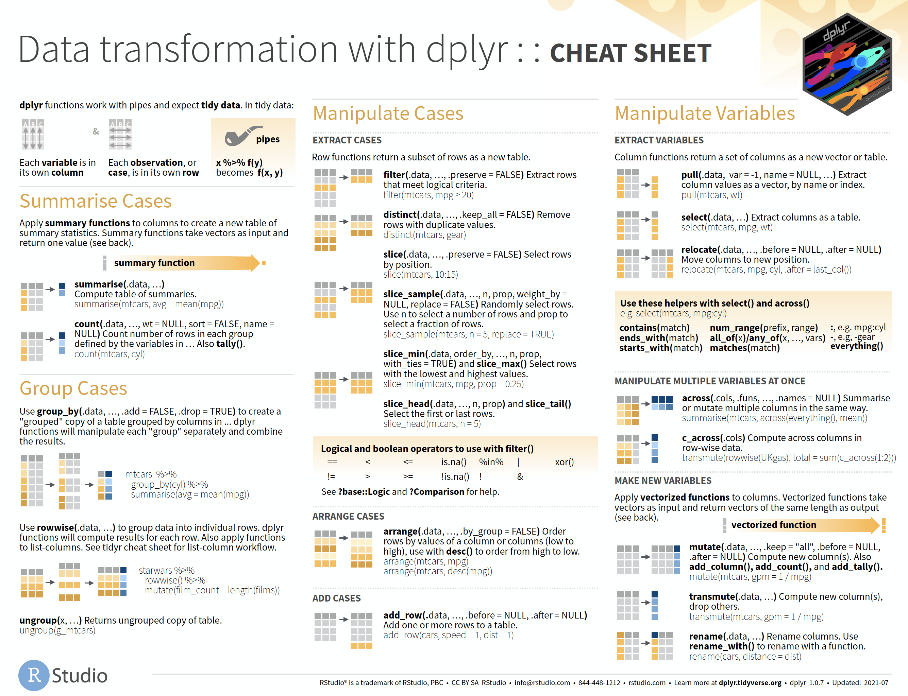

Link to dplyr
website
Link to
cheatsheets
The cheatsheet (part 1)

We’ve split the Data Transformation cheatsheet into two tutorials. This tutorial covers page 1 (summarize, group, manipulate).
Below we install and load the packages:
install.packages(c("dplyr", "tibble"))
library(dplyr)
library(tibble)Tidy data & Pipes
“
dplyrfunctions work with pipes and expect tidy data.”
There are three main tenets of tidy data:
- Each column contains a single variable
- Each row contains a single observation
- Values are at the intersection of variables and observations

We’ll cover tidy data in more depth in the tidyr
tutorial, but we recommend reading the original paper by Hadley
Wickham.
Pipes

Pipes are an example of syntactic sugar, which are “syntax changes in computer programming which make it easier for humans to code.” R is a functional programming language, so before the pipe we would write nested function calls.
Imagine we want to apply a function (first_function())
to an object (input) which returns
first_output, but then we want to apply a second function
(second_function()) to first_output ? Without
pipes, we would either have to assign the output from each function to
it’s own object:

Or we would have to nest the function calls:
As you can see, the first option clutters up our working environment with intermediate values, and the second options forces us to read the function from the inside out.
Pipes solve this problem by allowing us to ‘pipe’ the output from one function into subsequent functions:
%>% or |>?
The cheatsheet examples use the pipe provided by the
magrittr package, %>% (the
magrittr pipe is imported as part of the
tidyverse). As of 2021, R version
4.1.0 (codename “Camp Pontanezen”) was released with a native pipe
(|>). We’re going to demonstrate using both because of
reasons better
explained elsewhere. The important thing to understand about pipes
is how they restructure multiple function calls.
Use the code block below to experiment with pipes on the
x vector:
x <- c(8.3, 3.14, 28.0001, 11.75)# view x
# use %>% to get the mean() of x
# use |> to get the mean() of x
# use %>% to get the mean() and round() the output to 1 digit
# use |> to get the mean() and round() the output to 1 digitIf you’re using RStudio, you can set which pipe you’d like to use under Tools > Global Options > Code: Use native pipe operator |> (requires R 4.1+)

Summarise Cases
Apply summary functions to columns to create a new table of summary statistics. Summary functions take vectors as input and return one value.
One of the most common manipulations we perform on any dataset is a summary. As we’ve covered above, tidy data contains our variable in columns, the observations for these variables as rows, and at their intersection (i.e., the true contents of any dataset) are the values.
This rectangular structure is helpful for storage and manipulation, but we typically need to condense the data into something more easily digestible (usually in the form of summary statistics).
summarise()
In dplyr, the function for collapsing rows into a single
number is summarise() (you can also use the American
English version, summarize()).
We’re going to start with a simple example using the example
X and Y datasets from page 2 of the
cheatsheet. Use the code block below to explore X and
Y.
X <- tribble(
~a, ~b, ~c,
"a", "t", 1,
"b", "u", 2,
"c", "v", 3
)
X <- dplyr::mutate(X,
across(where(is.double), as.double))
Y <- tribble(
~e, ~f, ~g,
"a", "t", 3,
"b", "u", 2,
"d", "W", 1
)
Y <- dplyr::mutate(Y,
across(where(is.double), as.double))We’re going to summarize the numerical column c in table
X using dplyr’s summarise()
function in the code block below.
- Supply
Xto the.dataargument. - Provide the column we want to summarize (
c) to the…argument using thesum()function to get the summation of the three numbers inc(i.e., assum(c)):
# summarise(.data, sum())The output is a new data frame/tibble summarizing all observations in the input.
summary functions
The figure below shows how we could create the same output without
using summarise() and sum():
As we can see, the column name in the output is identical to the code we’ve used to create the summary.
## # A tibble: 1 × 1
## `sum(c)`
## <dbl>
## 1 6If we’d like to provide a name for the summary column, we can do so using the following syntax:
summarise(.data = <data>,
column_name = summary_function(<variable>)
)This essentially assigns the summary variable to a one-column tibble.
Use the code block below to create a summary of column c in
dataset X and name this column c_sum:
# summarise(.data,
# = sum(c))We can use the code block below to see if the output from
summarise() is identical to the output from
tibble():
# save the output below to 'z'
# summarise(.data = X, c_sum = sum(c))
identical(
# place 'z' in argument x
x =
y = tibble(c_sum = sum(1, 2, 3)))named summary functions
The figure below gives us an idea on how the output is created when
we call summarise() and provide a name for the new
column.
NOTE: The function we use inside
summarise() must be capable of reducing the column contents
into a single number.
count()
dplyr has a handy function for counting the number of
observations, count(). The count() function
returns a new data frame/tibble with the counts (or tally) of all
observations. We’ve created a test dataset, Z, to practice
using count() (below).
Z <- tribble(
~x, ~y, ~z,
"d", 4, "l",
"d", 5, "m",
"e", 6, "m"
)| x | y | z |
|---|---|---|
| d | 4 | l |
| d | 5 | m |
| e | 6 | m |
Use the code block below to count the z column in the
Z dataset.
# count the observations in the z column of the Z datasettallying values
With dplyr::count(), each value in the column(s)
provided to x is tallied up and returned under column
n:
Group Cases
Use
group_by(.data, …, .add = FALSE, .drop = TRUE)to create a “grouped” copy of a table grouped by columns in....dplyrfunctions will manipulate each “group” separately and combine the results.
In the previous exercise, we covered the count()
function. count() takes a dataset and specified column(s)
and returns a tibble containing the ‘counts’ for each column value under
a new n column. The count() output is created
by ‘grouping’ the dataset by the column provided to x, and
then summarizing it’s values with summarise(n = n()):
identical(
x = count(Z, z),
y = group_by(Z, z) |> summarise(n = n()))## [1] TRUEBelow we’ve loaded the sw_groups dataset, which is a
subset of the starwars data
from the dplyr package, for this section. Use the code
block below to explore:
sw_groups <- cheatsheetR::sw_groupsThe variables in sw_groups contain attributes for
characters in the Star Wars films. We’re going to use
group_by() to explore how these variables differ by
‘groups’.
grouped data structure
Before we summarise the values in sw_groups, we’re going
to view the structure of a grouped dataset.
In the code block below, we’ve piped the sw_groups to
the group_by() function. Add the sex variable,
and view the structure of this new object using str().
# group sw_groups by sex and view the str()
sw_groups |> group_by()group_by() returns a grouped_df object, but
retains the tibble structures as well
(tbl_df/tbl/data.frame). The grouped_df object
gives us the ability to perform specialized operations when we combine
it with summarise().
grouped summaries
What if we wanted to calculate the average height by sex in the
sw_groups?
First we supply the sex column to
group_by(), and then summarise() the
ht column using the mean() function.
Use the code block below and complete grouped summary:
sw_groups <- cheatsheetR::sw_groupssw_groups |>
# group sw_groups by sex
group_by(___) |>
# calculate the mean height
summarise(mean(___))As we can see, combining group_by() and
summarise() allows us to apply functions to columns and
answer questions like, “what is the average mass per home?” or
“what is the maximum height per species?”
named grouped summaries
We can also give the grouped summaries names (like using
summarise() in isolation). Use the code block below to name
the grouped mean() of the ht column
avg_ht.
sw_groups |>
# group sw_groups by sex
group_by(sex) |>
# name and calculate the mean height
summarise(___ = mean(___))As we can see, naming the summary is a bit like creating a tibble
with the unique (or distinct) values of the grouped column
(Z$z), and performing the summarizing function on each set
of grouped values (sum() in this case):
Multiple Group Summaries
We’ll often want to create more than a single grouped summary for our
data. A common set of numbers is the five-number
summary, which consists of the lowest value (min()),
the lower quartile (quantile(x, 0.25)), the middle value
(median()), the upper quartile
(quantile(x, 0.75)), and the highest value
(max()).
We’ve loaded another subset of the starwars dataset as
sw_summary for these exercises. Use the code block below to
explore:
sw_summary <- cheatsheetR::sw_summaryfive number summary
We’re going to create a five number summary for the mass
variable grouped by gender. We’ll start with minimum value
and the lower quartile.
# switching pipes!
sw_summary %>%
# group by gender
group_by(______) %>%
summarise(
# minimum using min(x)
min_mass = ,
# lower quantile using quantile(x, 0.25)
low_q_mass = )dealing with missing values
You may be encountering an error message (“Problem while
computing
low_q_mass = quantile(mass, 0.25)”). We’re
seeing this error because of the missing values (NA) in
gender and mass. We can remove the missing
values from the calculation using na.rm = TRUE.
Finish the five-number summary in the code block below (we’ve started it for you):
# finish removing the missing (NA) values from mass
sw_summary %>%
# group by gender
group_by(______) %>%
summarise(
min_mass = min(mass, na.rm = TRUE),
low_q_mass = quantile(mass, 0.25, na.rm = TRUE),
# median using median(x)
med_mass = ,
# lower quantile usiing quantile(x, 0.75)
up_q_mass = ,
# maximum using max(x)
max_mass =
)There are other methods for creating five-number summaries (see the
fivenum
function and the skimr
package).
grouping and re-shaping
In previous
tutorials we’ve covered tidyr’s pivoting functions
(pivot_longer() and pivot_wider()). We can use
these functions to reshape the output table from grouped summaries.
We’ll start with count(). Below we’ve counted the
gender and hair variables in
sw_summary.
sw_summary <- cheatsheetR::sw_summarysw_summary %>%
count(gender, hair)## # A tibble: 20 × 3
## gender hair n
## <chr> <chr> <int>
## 1 feminine auburn 1
## 2 feminine black 3
## 3 feminine blonde 1
## 4 feminine brown 6
## 5 feminine none 5
## 6 feminine white 1
## 7 masculine auburn, grey 1
## 8 masculine auburn, white 1
## 9 masculine black 9
## 10 masculine blond 3
## 11 masculine brown 11
## 12 masculine brown, grey 1
## 13 masculine grey 1
## 14 masculine none 31
## 15 masculine white 3
## 16 masculine <NA> 5
## 17 <NA> black 1
## 18 <NA> brown 1
## 19 <NA> none 1
## 20 <NA> unknown 1This output is a little long, so we want to convert it into a
cross-tabulation display, with the values of gender making
up the column names, and the counts for hair making up the
cell counts. We can do this by pivoting the output from count into a
wide format with tidyr::pivot_wider() (review it here).
In the code block below, assign gender to the
names_from argument, and n to
values_from:
sw_summary %>%
count(gender, hair) %>%
pivot_wider(names_from = ______,
values_from = _)This display allows us to look up the counts of hair color by
gender (and see which values are missing).
Let’s try another example!
Below we’re going to calculate some summary statistics for the mass
and height variables. We’ll get the mean and standard deviation, grouped
by gender, but then convert the output into a long (tidy)
format using the tidyr::pivot_longer() function. Complete
the group_by() and summarise() functions, the
store the new summary column names in 'stat' and the new
summary values in 'value'.
sw_summary %>%
# group by gender
group_by(______) %>%
# get mean and sd for mass and ht
summarise(
mean_mass = mean(___, na.rm = TRUE),
mean_ht = mean(__, na.rm = TRUE),
sd_mass = sd(____, na.rm = TRUE),
sd_ht = sd(__, na.rm = TRUE)
) %>%
# convert to tidy format
pivot_longer(cols = -gender,
# new column names
names_to = ______,
# new column values
values_to = _______)Manipulate Cases
Extract Cases
Row functions return a subset of rows as a new table.
Arrange cases
Add cases
Manipulate Variables
Extract variables
Manipulate multiple variables at once
Make new variables